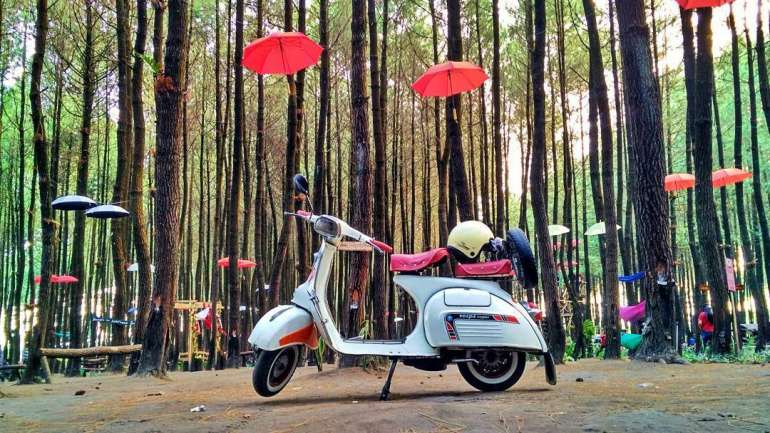

Wisata Hutan Pinus di Malang ini Wajib dikunjungi Bersama Keluarga!
By : Admin
Tanggal : 12-Oktober-2018
Malang adalah surganya wisata bagi wisatawan.
Banyak banget tujuan wisata yang bisa bunda dan keluarga kunjungi saat liburan ke Malang. Mulai dari pantai,
gunung, themepark, kampung tematik, sampai wisata hutan pinus. Nah, kali ini Lapis Malang akan membahas tentang
wisata-wisata hutan pinus di Malang yang cocok untuk bunda kunjungi bersama keluarga. Sambil refreshing tentunya
sekalian nambah foto di galeri dong ya.
Hutan Pinus Semeru
Hutan pinus ini dinamakan Hutan Pinus Semeru karena lokasinya yang berada di kaki gunung Semeru,
tepatnya di Kabupaten Malang. Walaupun baru dibuka tahun 2017, lokasi wisata ini sangat ramai dikunjungi
baik kamum remaja maupun keluarga. Hal yang menarik di lokasi ini adalah banyaknya spot foto hits seperti payung-payung,
hammock, dan lainnya. Oh ya alamat Hutan Pinus Semeru berada di Desa Sumberputih, Wajak Kabupaten Malang dan bunda cukup
membayar Rp 5.000 untuk tarif parkir saja.
Bedengan
Wisata ini berlokasi di perbatasan Kota Malang dan Kota Batu, tepatnya di wilayah Dau. Selain hutan pinus,
di kawasan Bedengan juga terdapat sungai yang indah dan airnya yang dingin. Kawasan wisata ini juga sering
dijadikan camping ground oleh anak sekolah atau keluarga loh bunda. Untuk kemah bunda cukup membayar Rp 25.000 saja.
Ledok Ombo
Berlokasi di Poncokusumo, atau jalur ke Gunung Bromo dan Gunung Semeru, Ledok Ombo merupakan kawasan wisata yang masih
alami dan lebih sepi dari Hutan Pinus Semeru dan Ledok Ombo. Selain hutan pinus, di Ledok Ombo juga terdapat sungai yang
sejuk dengan air dingin yang mengalir dan cocok banget untuk melepas penat. Oh iya disini juga terdapat beberapa rumah pohon
yang bisa bunda dan keluaraga jadikan spot foto untuk mengabadikan momen.
Taman Pinus Bendosari
Lokasinya berada di Kabupaten Malang, tepatnya di Pujon dan masih berada di kawasan wisata Coban Rondo. Hutan pinus disini
cukup luas loh bunda dan sangat cocok dijadikan lokasi untuk melepas penat sejenak. Selain bisa menikmati pemandangan, bunda
dan keluarga juga bisa mencoba flying fox, jembatan V dan juga mini trail. Wah seru banget ya pasti.
Precet Forest Park
Walaupun masih baru, wisata ini punya fasilitas yang cukup lengkap loh bun. Diantaranya, flying fox, atv, banyak spot foto
indah dan juga naik kuda untuk anak-anak. Jika berkunjung ke wisata ini, bunda hanya cukup membayar biaya parkir Rp 3.000 untuk
motor dan Rp 5.000 untuk mobil, karena tidak dikenakan biaya masuk wisata. Rute menuju Precet Forest Park adalah dari Malang ambil
Arah Bandulan, lurus saja sampai ke Wagir dari Wagir lurus ke arah Gunung Kawi akan melewati beberapa desa, salah satunya Sumbersuko.
Nah demikian bun wisata hutan pinus di Malang yang bisa bunda kunjungi bersama keluarga. Untuk bekal perjalanan, atau camilan selama di
salah satu hutan pinus yang bisa kunjungi, pilihannya ya Lapis Malang.